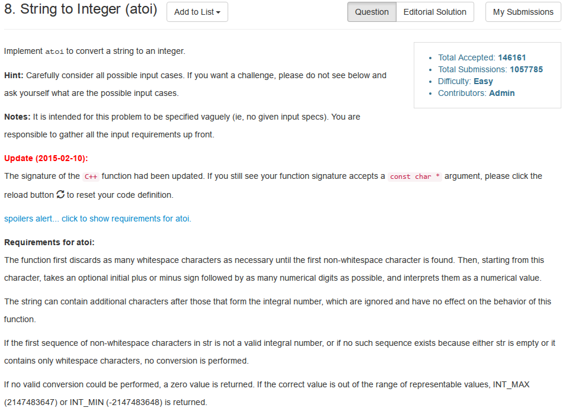

String to Integer (atoi)

题目大意:实现类似于C/C++中的atoi函数,即将数值型字符串转换为整数.
Solution
#include <iostream>
#include <cstring>
#include <algorithm>
#include <cmath>
#include <climits>
using namespace std;
class Solution
{
public:
int myAtoi(string str)
{
int n = str.length();
if(n == 0) return 0;
int i = 0;
while(str[i] == ' ') ++i;
int sign = 1;
if(str[i] == '-' || str[i] == '+')
{
if(str[i] == '-') sign = -1;
++i;
}
double sum = 0.0;
while(i < n && '0' <= str[i] && str[i] <= '9')
{
if(sign == -1)
{
sum = sum * 10 + '0' - str[i];
if(sum < INT_MIN * 1.0) return INT_MIN;
}
else
{
sum = sum * 10 + str[i] - '0';
if(sum > INT_MAX * 1.0) return INT_MAX;
}
++i;
}
return (int)sum;
}
};
int main()
{
Solution sol;
cout<<sol.myAtoi("2147483648")<<endl;
cout<<sol.myAtoi("-2147483649")<<endl;
return 0;
}
Analysis
这道题相当简单,主要考虑如下情况:
字符串前面可以有多个空白字符
接着是一个可选的'+','-'符号
然后是一些表示数字的字符
表示数字的字符之后可以出现一些非数字字符,但是这些字符不影响原计数
溢出的情况仍然是先用一个double存放临时值,最后强制转换为int型.
累加和不断的乘以10,然后加上当前的数位,每次乘以10之所以可以进行,
是因为这里可以保证:可能越过int的上下界,但是由于每次都会判断是否越过int界限,
因此绝对不会越过double界限.